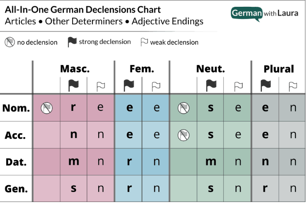
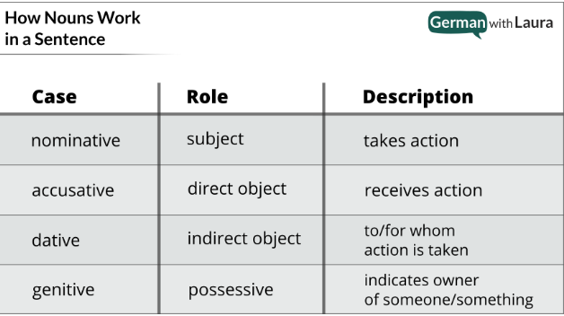

Basic Grammar
Alphabet
ABCDEFGHIJKLMNOPQRSTUVWXYZÄÖÜẞ
abcdefghijklmnopqrstuvwxyzäöüß
Articles
- Der - Masculine
- Die - Feminine
- Das - Neuter
Word Position Order
TBD
Declensions
German uses declensions to provide crucial information about the nouns in a sentence — so that we can know who is doing what to whom.
English is a analytic language: we know who is doing what to whom in a sentence based on word order.
German is an inflected language: we know who is doing what to whom in a sentence because of the declensions that ‘flag’ the role (e.g. subject, direct object) of each noun.
The case of the noun is how we know what role in the sentence it’s playing. And the gender of the noun is an inseparable feature of the noun that has to come along for the ride. Since declensions tell us the gender & case of each noun, declensions change dependent on if a noun is masculine, feminine, neuter, or plural AND dependent on if the case is nominative, accusative, dative, or genitive.
All In One Declension Chart

Determiners: a, the, some, few, this, etc. that tell us how many of the noun or which one.
Adjectives: describe some feature of the noun (e.g. big, small, round, flat, blue).
For example, if I need to plug in the determiner this (dies-), dependent on where in the chart it needs to go, I might get any of these values: dieser, diese, dieses, diesen, diesem.
Types of Declensions
- Strong declensions: better (but not flawlessly) indicate the gender/case of the noun because they are the most varied.
- Weak declensions: do not indicate the gender/case of the noun because they have almost no variation (there are just two options: -e or -en).
Nouns and their gender
You can memorize der, die and das for all nouns, but there is a better way. German noun genders are determined by either group or by form.
Noun Group Examples:
Masculine (der):
- Alcoholic and plant-based drinks
- Currency
- Days, Months and Seasons
- Directions
- Male persons and animals
- Mountains and mountain ranges
- Non-German Rivers
- Outer Space
- Rocks and Minerals
- Weather - doesn't track well... die Sonne, die Wolke...
Feminine (die):
- Female persons and animals
- Airplanes, motorcycles, ships
- Numerals used as nouns
- Rivers within Germany, Austria and Switzerland
- Trees, Fruits and Flowers
Neuter (das):
- Alphabet
- Continents, cities, provinces and most countries
- Cafes
- Colors
- Gerunds - a form that is derived from a verb but that functions as a noun (running, asking...)
- Hotels
- Languages
- Metals and chemical elements
- Movie theaters
- Other parts of speech used as nouns (gerunds, colors, languages, English -ing forms)
- Restuarants
- Scientific units & measurements
- Young persons and baby animals
Noun Form Examples:
When in conflict, the following noun form rules overrule noun group rules.
The end of nouns, or, the suffix is what determines the gender of the noun.
There are certain suffixes that are almost exclusively masculine, feminine, and neuter.
- Masculine: -ant, -ast, -ich, -ig, -ismus, -ling, -or, -us
- Examples: der Konsonant (consonant), der Kontrast (contrast), der Teppich (rug, carpet), der Käfig (cage), der Schwächling (weakling), der Faktor (factor), der Zirkus (circus)
- Also nouns formed from strong verbs:
- der Betrieb (operation, company, plant), der Biss (bite, from bissen), der Fall (case, instance; drop, from fallen), der Gang (gear; aisle)
- Common exceptions:
- das Grab (grave), das Leid (harm, sorrow), das Maß (measurement), das Schloss (castle), das Verbot (ban, prohibition)
- ~60% of nouns ending in -en, -el, -er
- der Hafen (harbor), der Flügel (wing), der Schatten (shade), der Fehler (mistake) and all nouns referring to people (most are from verbs), e.g. der Bäcker (baker, from backen), der Fahrer (driver, from fahren), but also der Onkel (uncle), der Vater (father), etc.
-
Some common exceptions:
- all gerunds such as das Essen (the food, eating) or das Fahren (driving); die Butter (butter), die Regel (rule), die Wurzel (root), die Geisel (hostage), das Fieber (fever), das Segel (sail), das Zeichen (sign, symbol)
-
Feminine: -a, -anz, -enz, -ei, -ie, -heit, -keit, -ik, -sion, -tion, -sis, -tät, -ung, -ur, schaft
- Examples: die Pizza, die Dissonanz (dissonance), die Frequenz (frequency), die Konditorei (pastry shop), die Demokratie (democracy), die Dummheit (stupidity), die Möglichkeit (possibility), die Musik (music), die Explosion, die Revolution, die Basis, die Realität (reality), die Prüfung (exam), die Prozedur (procedure), die Freundschaft (friendship)
- -in OR -frau denoting the female counterpart to a male person. Ex: die Studentin (female student), die Kauffrau (businesswoman)
- 90% of nouns ending in -e
- Ex: die Blume (flower), die Lampe (lamp), die Katze (cat), die Decke (blanket; ceiling) die Collage, die Marionette
- Common exceptions: der Käse (cheese), das Auge (eye), das Ende (end), das Interesse (interest), most nouns that end with -e but begin with Ge- (e.g. das Genie)
-
most nouns (coming from verbs) ending in -t: die Ankunft (arrival), die Fahrt (drive), die Macht (power), die Aussicht (view)
- common exceptions: der Dienst (service), der Durst (thirst), das Gift (poison)
-
Neuter: -chen, -lein, -icht, -il, -it, -ma, -ment, -tel, -tum, -um
- das Mädchen (girl), das Fräulein (young woman, miss), das Dickicht (thicket), das Ventil (valve), das Dynamit (dynamite), das Schema (schematic), das Experiment, das Viertel (quarter), das Christentum (christianity), das Museum, das Individuum (individual)
- Common exceptions: der Profit, der Granit, die Firma (company), der Zement (cement), der Reichtum (wealth), der Irrtum (error)
- Most nouns that start with the prefix Ge-: das Gesetz (law), das Gespräch (conversation), das Gebäude (building)
- Common exceptions: der Gedanke (thought), der Geschmack (taste), and approx. 20 other masculine and feminine nouns that start with Ge- not counting any Ge- nouns referring to male or female persons (e.g. der Genosse / die Genossin — comrade)
- ~70% of nouns ending with -nis and -sal: das Bedürfnis (need), das Ereignis (event), das Schicksal (fate)
- Note: The remaining 30% of -nis and -sal nouns are feminine and many originate from adjectives or indicate states of mind: die Bitternis (bitterness), die Finsternis (darkness), die Besorgnis (anxiety), die Betrübnis (sadness). Other: die Erkenntnis (perception), die Erlaubnis (permission), die Kenntnis (knowledge, cognition, skills), die Mühsal (hardship)
- -al, -an, -ar, -är, -at, -ent, -ett, -ier, -iv-, -o, -on (foreign loan words for objects)
- If the suffixes -al, -an, -ar, -är, -at, -ent, -ett, -ier, -iv-, -o, -on are used to refer to male persons, they take the masculine: der Student, der Militär (military man), der Kanadier (male Canadian).
- Otherwise, these suffixes are generally neuter: das Lineal (ruler), das Organ, das Formular, das Militär (military), das Sekretariat (secretary), das Talent, das Etikett (label, tag), das Papier (paper), das Adjecktiv (adjective), das Büro (office), das Mikrophon
Noun Cases

Think of the four cases as ‘slots’ in a sentence that we must/may fill up with nouns.
The general rules of thumb are:
- Always fill up the nominative ‘slot’ first — every sentence needs a subject! (and a conjugated verb!)
- Default to filling up the accusative ‘slot’ next unless…
- If you’re using a dative verb, preposition, or adjective: the associated noun must be in the dative ‘slot’, not the accusative.
- You can pretty much forget about the genitive case.
- Used in academia and other formal registers but that is about it.